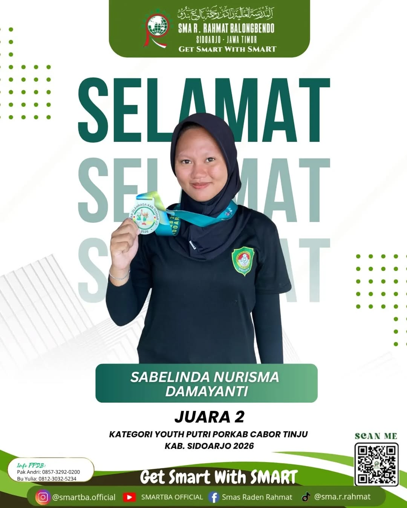
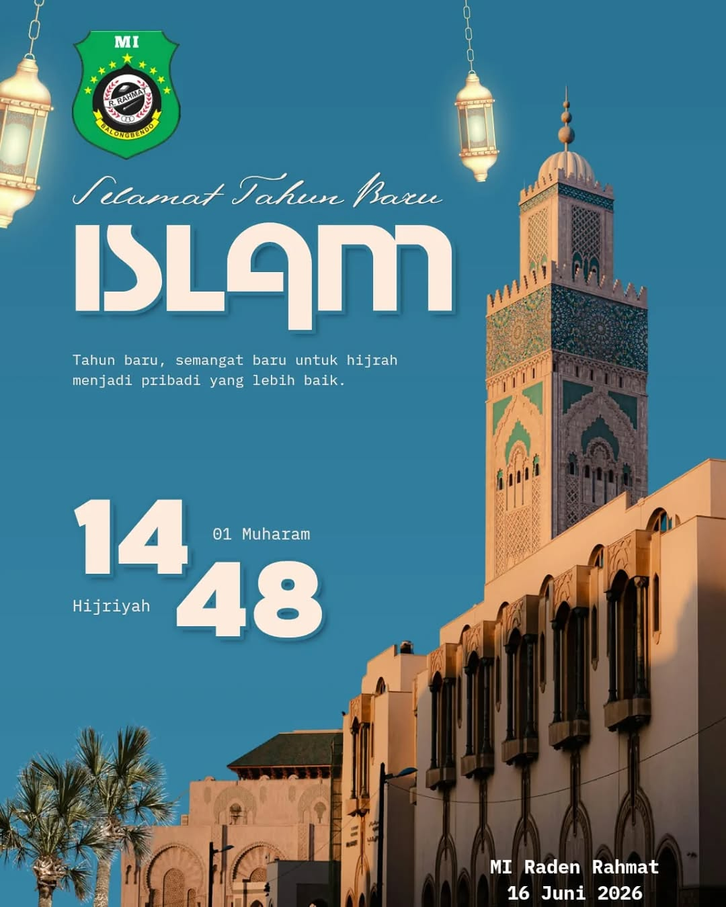
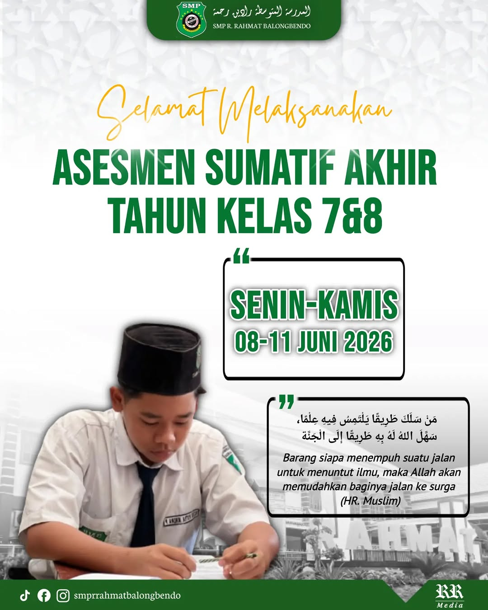
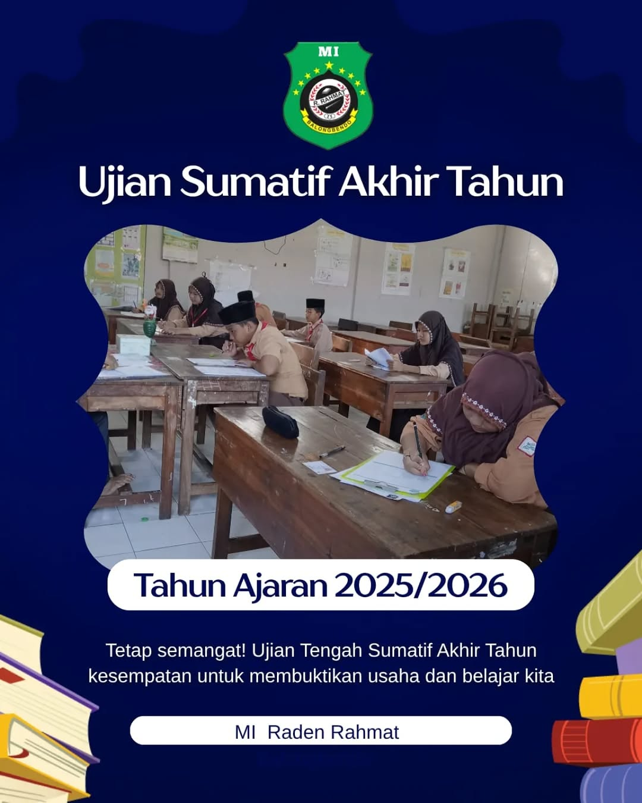
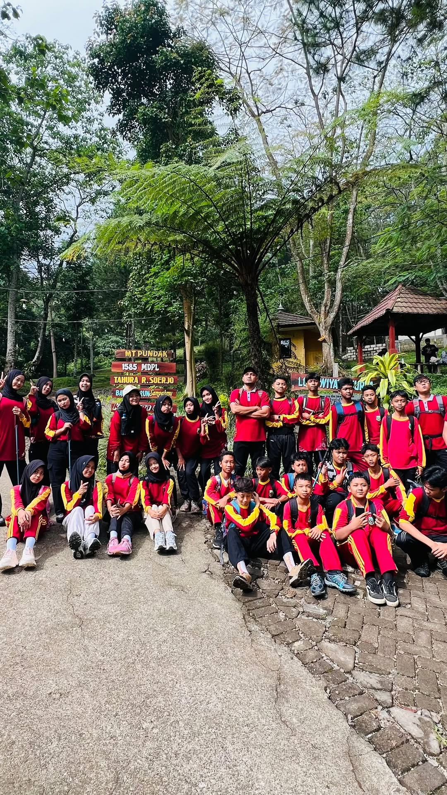

Selamat dan sukses atas prestasi yang membanggakan! 🎉✨ Sabelinda Nurisma Damayanti, siswi SMA R Rahmat Balongbendo, berhasil meraih *JUARA 2* pada kat...
Selamat dan sukses atas prestasi yang membanggakan! Sabelinda Nurisma Damayanti, siswi SMA R Rahmat Balongbendo, telah menorehkan sejarah baru dalam perjalanan sekolah dengan berhasil meraih JUARA 2 pada kategori Youth Putri Porkab Cabor Tinju yang diselenggarakan oleh Pemkab Sidoarjo pada tahun 2026.
Prestasi ini menjadi bukti nyata bahwa kerja keras, ketekunan, dan semangat belajar yang tinggi mampu mengantarkan pada hasil yang gemilang. Sabelinda Nurisma Damayanti telah menunjukkan bahwa dengan dedikasi dan kerja keras, setiap siswa dapat mencapai prestasi yang luar biasa.
Ketua Sekolah, menambahkan, "Prestasi ini tidak hanya membawa kebanggaan bagi SMA R Rahmat Balongbendo, tetapi juga merupakan bukti bahwa siswa-siswi kita memiliki potensi besar yang dapat dikembangkan." Dengan demikian, sekolah akan terus mendukung dan memfasilitasi siswa untuk mengembangkan bakat dan minat mereka.
Para siswa dan staf sekolah sangat bangga atas prestasi Sabelinda Nurisma Damayanti. Kami percaya bahwa prestasi ini akan menjadi inspirasi bagi seluruh siswa untuk terus berani mencoba, mengasah kemampuan, dan tidak pernah berhenti berkarya. Semoga Sabelinda Nurisma Damayanti akan terus memimpin dan menunjukkan contoh yang baik bagi rekan-rekannya.
Sekolah akan terus mendukung dan memfasilitasi Sabelinda Nurisma Damayanti untuk mengembangkan bakat dan minatnya. Kami percaya bahwa dengan kerja sama dan dukungan tim, Sabelinda Nurisma Damayanti akan terus mencapai prestasi yang lebih tinggi.
Selamat atas prestasi yang membanggakan, Sabelinda Nurisma Damayanti! Kami percaya bahwa kamu akan terus memimpin dan menunjukkan contoh yang baik bagi seluruh siswa SMA R Rahmat Balongbendo.
Teruslah melangkah, menginspirasi, dan membawa nama baik sekolah ke tingkat yang lebih tinggi. Kami bangga atasmu!
23 Jun 2026
🔍*LIBUR SEMESTER MASIH BINGUNG MAU DAFTAR SEKOLAH?*🔍 *✨LAYANAN SPMB SMA R RAHMAT TETAP BUKA SELAMA LIBUR SEMESTER*✨ Jangan sampai ketinggalan kesempat...
LIBUR SEMESTER MASIH BINGUNG MAU DAFTAR SEKOLAH?
Pada saat libur semester, banyak siswa yang merasa bingung tentang masa depannya. Apakah akan melanjutkan sekolah, atau memilih jalur lain? Namun, ada kabar baik bagi mereka yang sedang mencari sekolah yang tepat. SMA R Rahmat Balongbendo membuka layanan SPMB (Sekolah Menengah Atas) yang masih terbuka selama libur semester.
Bagi Anda yang ingin menjadi bagian dari SMA R Rahmat Balongbendo, jangan ragu untuk mendaftarkan diri. Layanan SPMB 2026/2027 yang disediakan oleh SMA R Rahmat Balongbendo sangat lengkap dan mudah diakses.
Pertama, Anda dapat melakukan konsultasi gratis untuk mengetahui lebih banyak tentang SMA R Rahmat Balongbendo. Dengan demikian, Anda dapat memiliki gambaran yang jelas tentang apa yang ditawarkan sekolah ini. Selain itu, proses pendaftaran juga sangat mudah, baik secara online maupun offline.
Jika Anda lebih suka melakukan pendaftaran secara online, Anda dapat menghubungi Pak Andri melalui WA di nomor 0857-3292-0200 atau Bu Yulia di nomor 0812-3032-5234. Dengan demikian, Anda dapat melakukan pendaftaran kapan saja dan di mana saja.
Jika Anda lebih suka melakukan pendaftaran secara offline, Anda dapat mengunjungi Gedung SMA R Rahmat Balongbendo pada hari Senin sampai Sabtu, mulai pukul 07.00 WIB hingga 12.00 WIB.
Perlu diingat bahwa kuota terbatas, jadi segera daftarkan diri Anda untuk tidak ketinggalan kesempatan menjadi bagian dari SMA R Rahmat Balongbendo. Dengan demikian, Anda dapat memiliki masa depan yang lebih cerah dan sukses.
22 Jun 2026
📢 PENGUMUMAN LIBUR SEMESTER GENAP 2025/2026 📢 Assalamu'alaikum Warahmatullahi Wabarakatuh. Segenap keluarga besar SMA R. Rahmat Balongbendo mengu...
PENGUMUMAN LIBUR SEMESTER GENAP 2025/2026
Segenap keluarga besar SMA R. Rahmat Balongbendo mengucapkan selamat menikmati masa libur semester kepada seluruh peserta didik. Libur semester ini merupakan kesempatan yang luar biasa bagi siswa untuk beristirahat, berkumpul bersama keluarga, meningkatkan ibadah, serta mengembangkan potensi diri melalui kegiatan yang positif dan bermanfaat.
Menurut pengumuman yang dikeluarkan oleh SMA R. Rahmat Balongbendo, libur semester berlangsung pada tanggal 22 Juni 2026 s.d. 11 Juli 2026. Pada hari tersebut, siswa diharapkan dapat menggunakan waktu libur untuk melakukan kegiatan yang bermanfaat dan positif, seperti mengikuti kursus atau pelatihan, berpartisipasi dalam kegiatan sosial, atau sekadar bersantai dengan keluarga.
Menurut para pendidik, waktu libur adalah kesempatan untuk mengisi diri dengan hal-hal baik. "Waktu libur adalah kesempatan untuk mengisi diri dengan hal-hal baik. Tetap produktif, tetap rendah hati, dan terus menjadi versi terbaik dari diri sendiri," kata salah satu guru di SMA R. Rahmat Balongbendo.
Libur semester ini juga merupakan kesempatan bagi siswa untuk meningkatkan kesehatan dan keselamatan mereka. Oleh karena itu, diharapkan siswa dapat menggunakan waktu libur untuk melakukan aktivitas yang sehat, seperti berolahraga atau berenang, serta menghindari kegiatan yang berisiko tinggi.
Sebelum berlibur, para guru dan staf SMA R. Rahmat Balongbendo telah menyiapkan berbagai program kegiatan yang dapat dinikmati oleh siswa, seperti kegiatan ekstrakurikuler, kursus, dan pelatihan. Selain itu, pihak sekolah juga telah menyiapkan berbagai fasilitas yang dapat digunakan oleh siswa selama liburan.
Menyambut libur semester ini, SMA R. Rahmat Balongbendo mengucapkan selamat berlibur kepada seluruh peserta didik. "Selamat berlibur, tetap jaga kesehatan, keselamatan, dan semangat belajar. Sampai jumpa di tahun ajaran baru dengan semangat yang lebih baik!" kata Kepala Sekolah SMA R. Rahmat Balongbendo.
Secara keseluruhan, libur semester ini diharapkan dapat menjadi kesempatan bagi siswa untuk beristirahat, berkembang, dan menjadi lebih baik. Kami berharap siswa dapat menggunakan waktu libur dengan produktif dan bermanfaat, serta kembali ke sekolah dengan semangat yang lebih baik.
Selamat berlibur, SMA R. Rahmat Balongbendo! 🌿📚
22 Jun 2026
Info libur Akhir Tahun PPDB buka setiap hari senin- sabtu mulai pukul 07.30 WIB sampai 13.00 WIB SPMB Gel 2 "Free Uang Gedung" berakhir di b...
Liburan Akhir Tahun, Waktu yang Tepat untuk Mengikuti PPDB
Liburan akhir tahun adalah waktu yang sangat berharga bagi siswa-siswi untuk beristirahat dan merefresh diri setelah melewati semester yang panjang. Namun, bagi mereka yang akan melanjutkan pendidikan ke tingkat berikutnya, liburan ini juga merupakan waktu yang tepat untuk mengikuti PPDB (Penerimaan Peserta Didik Baru).
PPDB di SMP Raden Rahmat Balongbendo akan dibuka setiap hari Senin hingga Sabtu, mulai pukul 07.30 WIB hingga 13.00 WIB. Waktu yang cukup fleksibel untuk para calon peserta didik untuk mengikuti seleksi PPDB.
SPMB Gelar 2: "Free Uang Gedung" Berakhir di Juni
Informasi lain yang perlu diketahui adalah bahwa SPMB Gelar 2 "Free Uang Gedung" telah berakhir di bulan Juni. Artinya, bagi siswa-siswi yang telah lulus dari sekolah menengah pertama dan ingin melanjutkan pendidikan ke tingkat lanjutan, sekarang sudah saatnya untuk mengikuti seleksi SPMB.
Kontak Informasi
Bagi para calon peserta didik yang ingin mengikuti PPDB atau SPMB, dapat menghubungi kontak informasi yang telah disediakan, yaitu nomor telepon 0857-0662-7985.
Visi Sekolah
SMP Raden Rahmat Balongbendo memiliki visi untuk menjadi sekolah yang memiliki akhlakul karimah, berkarakter, berprestasi, dan berwawasan lingkungan. Dengan demikian, sekolah ini berharap dapat menghasilkan lulusan yang memiliki kemampuan dan karakter yang baik untuk menghadapi tantangan di masa depan.
Akhir Kata
Dengan demikian, liburan akhir tahun ini adalah waktu yang tepat bagi para calon peserta didik untuk mengikuti PPDB dan SPMB. Jangan lupa untuk menghubungi kontak informasi yang telah disediakan untuk mendapatkan informasi yang lebih lanjut. Sekolah SMP Raden Rahmat Balongbendo siap menerima calon peserta didik yang memiliki kemampuan dan karakter yang baik untuk menghadapi tantangan di masa depan.
22 Jun 2026
🎉 LIBUR AWAL SEMESTER 2 🎉 MI Raden Rahmat Balongbendo 📅 22 Juni - 11 Juli 2026 ✨ 5 Pesan Penting Selama Liburan: 1⃣ Wajib berakhlakul karimah di rumah...
1⃣ Wajib berakhlakul karimah di rumah
2⃣ Berbakti kepada orang tua
3⃣ Jaga sholat & mengaji jangan sampai tertinggal
4⃣ Bantu pekerjaan rumah
5⃣ Batasi penggunaan gadget
Dengan demikian, para siswa dan siswi diharapkan dapat mengembangkan akhlakul karimah dan menjadi generasi qurani yang shaleh. Selain itu, liburan juga merupakan kesempatan bagi para siswa dan siswi untuk memanfaatkan waktu dengan kegiatan positif dan tetap menjaga kedisiplinan ibadah. MI Raden Rahmat Balongbendo juga mengimbau para siswa dan siswi untuk selalu menjaga koneksi dengan sekolah dan memanfaatkan media sosial untuk mendapatkan informasi terkini. Berikut adalah beberapa link media sosial yang dapat diikuti:📸 Instagram: https://www.instagram.com/miradenrahmatbalongbendo
👤 Facebook: https://www.facebook.com/share/17Gre9SYbS/ | https://www.facebook.com/share/1CYkwGmYwF/
🌐 Website: https://mi.radenrahmatbalongbendo.sch.id
MI Raden Rahmat Balongbendo berharap liburan awal semester 2 ini dapat menjadi kesempatan bagi para siswa dan siswi untuk berkembang dan menjadi pribadi yang lebih baik. Selamat berlibur!20 Jun 2026

✨ Selamat Tahun Baru Islam 1448 H ✨ "Selamat menyambut 1 Muharram 1448 Hijriyah. Semoga di tahun baru ini, kita semua diberikan semangat baru unt...
MI Raden Rahmat, sebuah lembaga pendidikan Islam yang terletak di daerah yang strategis, baru-baru ini mengadakan sebuah kegiatan yang sangat menarik dan inspiratif. Kegiatan ini berupa pembukaan akun Instagram resmi MI Raden Rahmat, yaitu @miradenrahmat.
Acara pembukaan akun Instagram ini dihadiri oleh para siswa, guru, dan staf MI Raden Rahmat. Mereka semua sangat antusias dan bersemangat untuk memulai sebuah era baru di dunia digital. Dengan adanya akun Instagram ini, MI Raden Rahmat dapat meningkatkan visibilitas dan mencapai lebih banyak orang di seluruh dunia.
Para siswa dan guru yang hadir sangat senang karena dapat mengekspresikan diri mereka sendiri melalui konten-konten yang akan dipublikasikan di akun Instagram MI Raden Rahmat. Mereka dapat berbagi pengalaman, pengetahuan, dan kegiatan mereka di sekolah. Dengan demikian, para siswa dan guru dapat lebih terhubung dan saling berbagi ide-ide yang positif.
MI Raden Rahmat juga menggunakan akun Instagram ini untuk mempromosikan kegiatan-kegiatan yang akan dilaksanakan di sekolah. Mulai dari seminar, konferensi, dan kegiatan-kegiatan lainnya, semua akan dipublikasikan di akun Instagram ini. Hal ini dapat membantu para siswa dan orang tua mereka untuk lebih terinformasi dan tidak ketinggalan informasi.
Pembukaan akun Instagram MI Raden Rahmat juga merupakan langkah awal untuk membangun komunitas yang lebih besar dan lebih kuat. Dengan adanya akun Instagram ini, MI Raden Rahmat dapat berinteraksi dengan lebih banyak orang dan membangun hubungan yang lebih erat dengan komunitas sekitar.
Secara keseluruhan, pembukaan akun Instagram MI Raden Rahmat merupakan langkah yang sangat tepat dan strategis. Dengan adanya akun Instagram ini, MI Raden Rahmat dapat meningkatkan visibilitas, mempromosikan kegiatan-kegiatan, dan membangun komunitas yang lebih besar dan lebih kuat.
MI Raden Rahmat juga berharap bahwa pembukaan akun Instagram ini dapat menjadi contoh bagi lembaga pendidikan lainnya untuk mengikuti jejak mereka. Dengan demikian, mereka dapat meningkatkan kualitas pendidikan dan membangun hubungan yang lebih erat dengan komunitas sekitar.
Terakhir, MI Raden Rahmat ingin mengucapkan terima kasih kepada semua pihak yang telah mendukung dan membantu mereka dalam pembukaan akun Instagram ini. Dengan semangat dan kerja keras, MI Raden Rahmat yakin bahwa mereka dapat mencapai tujuan mereka dan menjadi salah satu lembaga pendidikan terbaik di daerah mereka.
MI Raden Rahmat juga berharap bahwa pembukaan akun Instagram ini dapat menjadi awal dari sebuah era baru di dunia digital. Dengan demikian, mereka dapat meningkatkan visibilitas, mempromosikan kegiatan-kegiatan, dan membangun komunitas yang lebih besar dan lebih kuat.
16 Jun 2026
✨ Serunya Trial Class MI Raden Rahmat Balongbendo! ✨ Senin, 15 Juni 2026 menjadi hari yang penuh warna dan kebahagiaan! 🌈 Hari ini, calon siswa-siswi ...
Serunya Trial Class MI Raden Rahmat Balongbendo!
Senin, 15 Juni 2026 menjadi hari yang penuh warna dan kebahagiaan! Calon siswa-siswi baru kami mengikuti kegiatan Trial Class dengan tema "Master Chef Cilik". Lihatlah antusiasme adik-adik saat berkreasi menghias donat dan mewarnai topi chef mereka. Di MI Raden Rahmat Balongbendo, kami percaya bahwa belajar itu harus menyenangkan (joyful learning).
Melalui kegiatan ini, kami tidak hanya mengenalkan suasana sekolah, tetapi juga mengasah kreativitas dan motorik anak. Anak-anak bebas berekspresi dan mengekspresikan diri mereka sendiri melalui berbagai kegiatan yang disediakan. Kami melihat banyak anak yang bersemangat dan tidak sabar untuk menjadi bagian dari keluarga besar MI Raden Rahmat Balongbendo di Tahun Ajaran 2026/2027.
Terima kasih kepada Ayah & Bunda yang telah hadir dan mempercayakan putra-putrinya. Kami sangat menghargai kesediaan dan kepercayaan Anda. Kami berharap adik-adik semakin semangat dan tidak sabar untuk menjadi bagian dari keluarga besar MI Raden Rahmat Balongbendo.
Kami juga ingin mengajak Anda semua untuk tidak ketinggalan. Daftarkan putra-putri Anda sekarang juga dan jadilah bagian dari kami. Berikut adalah informasi lengkapnya:
Info Selengkapnya & Pendaftaran:
Link Resmi: https://www.instagram.com/miradenrahmatbalongbendo
Instagram: https://www.instagram.com/miradenrahmatbalongbendo
Facebook: https://www.facebook.com/share/17Gre9SYbS/ dan https://www.facebook.com/share/1CYkwGmYwF/
Website: https://mi.radenrahmatbalongbendo.sch.id
Mari Bergabung dengan MI Raden Rahmat Balongbendo!
Kami percaya bahwa dengan menyenangkan dan memadukan antara belajar dan bermain, anak-anak akan tumbuh menjadi generasi yang cerdas, kreatif, dan mandiri. Jadi, jangan tunggu lagi! Daftarkan putra-putri Anda sekarang juga dan jadilah bagian dari keluarga besar MI Raden Rahmat Balongbendo.
15 Jun 2026
🌙 Menutup Tahun 1447 H dengan Doa, Menyambut 1448 H dengan Semangat Baru 🌟 Mari kita akhiri tahun 1447 H dengan penuh rasa syukur dan perbanyak istigh...
Menutup Tahun 1447 H dengan Doa, Menyambut 1448 H dengan Semangat Baru
Pada malam hari yang indah ini, kita semua berkumpul untuk merayakan akhir tahun Hijriyah yang telah berlalu. Tahun 1447 H telah berlalu dengan peristiwa-peristiwa yang luar biasa, dan sekarang kita telah menyandang kesempatan untuk menyambut Tahun Baru Hijriyah yang baru, yaitu 1448 H.
Kita semua harus mengakui bahwa Tahun 1447 H telah memberikan kita banyak pengalaman yang berharga. Dari pengalaman tersebut, kita dapat menarik kesimpulan bahwa kehidupan ini tidak pernah terlepas dari cobaan dan ujian. Namun, dengan sabar dan kesabaran, kita dapat menghadapi setiap permasalahan dan keluar dengan lebih kuat.
Sebelum kita menyambut tahun baru, kita harus mengakhiri tahun lalu dengan penuh rasa syukur. Kita harus mengucapkan terima kasih kepada Allah SWT atas segala karunia dan rahmat yang telah diberikan kepada kita. Kita juga harus beristighfar atas segala kekurangan dan kesalahan yang telah kita lakukan.
Dalam memasuki Tahun Baru Hijriyah yang baru, kita harus memiliki semangat baru untuk menjadi pribadi yang lebih baik. Kita harus berusaha untuk lebih dekat dengan Al-Qur'an dan mempraktikkan ajaran-ajaran yang terkandung di dalamnya. Kita juga harus berakhlak mulia dan menjadi contoh bagi orang lain.
Dalam mencapai tujuan tersebut, kita harus berdoa dan berharap kepada Allah SWT. Doa adalah kunci untuk mencapai keberhasilan dalam hidup kita. Kita harus berdoa dengan tulus dan ikhlas, serta memohon ampun atas segala kesalahan yang telah kita lakukan.
Berikut adalah doa akhir dan awal tahun yang dapat kita amalkan:
"Dadaku berQur'an, pikiranku berilmu, perilakuku berakhlak mulia."
Semoga doa kita disukai oleh Allah SWT dan kita diberikan keberkahan, kesehatan, dan kekuatan untuk terus meningkatkan ketakwaan kepada-Nya. Aamiin.
Mari kita sambut Tahun Baru Hijriyah yang baru dengan semangat baru dan doa yang tulus. Mudah-mudahan kita semua dapat menjadi pribadi yang lebih baik dan lebih dekat dengan Al-Qur'an. Aamiin.
Sumber: Raden Rahmat Balongbendo
15 Jun 2026
✨ JUM'AT BERKAH ✨ 📅 12 Juni 2026 "Ya Allah, sebagaimana Engkau melimpahkan rahmat-Mu, maka limpahkan juga kepada kami keberkahan, kesehatan,...
Jumat Berkah, 12 Juni 2026, pagi ini anak-anak MI Raden Rahmat Balongbendo mengawali hari dengan momen spesial yang membiasakan mereka dengan cinta ibadah sejak dini. Mereka berkumpul untuk melakukan Sholat Dhuha berjamaah, yang merupakan salah satu bentuk ibadah yang dapat membantu meningkatkan keimanan dan ketaqwaan.
Setelah Sholat Dhuha, anak-anak tersebut melanjutkan kegiatan dengan melakukan Istighosah bersama. Istighosah adalah doa yang diucapkan untuk memohon ampun dan meminta perlindungan dari Allah SWT dari segala keburukan. Dengan melakukan Istighosah, anak-anak dapat mengembangkan kebiasaan untuk selalu memohon ampun dan meminta bantuan dari Allah SWT dalam segala hal.
Setelah itu, mereka melakukan Doa penuh harap kepada Allah SWT. Momen ini sangat spesial karena anak-anak dapat berkomunikasi dengan Allah SWT secara langsung dan memohon kebutuhan dan keinginan mereka. Dengan melakukan Doa, anak-anak dapat mengembangkan kebiasaan untuk selalu berkomunikasi dengan Allah SWT dan meningkatkan keimanan dan ketaqwaan mereka.
MI Raden Rahmat Balongbendo merupakan salah satu madrasah yang berkomitmen untuk meningkatkan kualitas pendidikan Islam. Mereka berusaha untuk membentuk generasi Qur'ani yang sholeh dan sholehah yang dapat menjadi contoh bagi masyarakat sekitar.
Para orang tua dan pengajar di MI Raden Rahmat Balongbendo sangat bangga dengan kemajuan anak-anak mereka. Mereka berusaha untuk memberikan pendidikan yang berkualitas dan membantu anak-anak mereka menjadi generasi Qur'ani yang sholeh dan sholehah.
Masyarakat sekitar juga sangat mendukung kegiatan ini. Mereka berharap bahwa anak-anak MI Raden Rahmat Balongbendo dapat menjadi contoh bagi anak-anak lainnya dan membantu meningkatkan kualitas pendidikan Islam di daerah tersebut.
MI Raden Rahmat Balongbendo dapat diikuti melalui media sosial mereka, seperti Instagram, Facebook, dan website resmi mereka. Mereka juga dapat dihubungi melalui alamat website mereka untuk mendapatkan informasi lebih lanjut tentang kegiatan mereka.
Jumat Berkah, 12 Juni 2026, merupakan hari yang sangat spesial bagi anak-anak MI Raden Rahmat Balongbendo. Mereka dapat mengawali hari dengan momen spesial yang membiasakan mereka dengan cinta ibadah dan meningkatkan keimanan dan ketaqwaan mereka. Semoga anak-anak MI Raden Rahmat Balongbendo dapat menjadi contoh bagi masyarakat sekitar dan membantu meningkatkan kualitas pendidikan Islam di daerah tersebut.
12 Jun 2026

بسم الله الرحمن الرحيم Selamat Menempuh Asesmen Sumatif Akhir Tahun. Semoga diberi kemudahan serta kelancaran, dan mendapatkan hasil yang maksimal. Aa...
Selamat pagi, para pembaca! Hari ini, kami ingin berbagi berita gembira dari SMP Raden Rahmat Balongbendo. Setelah beberapa bulan belajar dan berjuang, akhirnya waktunya tiba untuk menghadapi Asesmen Sumatif Akhir Tahun. Semoga para siswa dan guru mendapatkan kemudahan, kelancaran, dan hasil yang maksimal.
SMP Raden Rahmat Balongbendo telah menjadi salah satu sekolah yang paling dipercaya di daerahnya. Dengan motto "Berakhlakul Karimah, Berkarakter, Berprestasi, Berwawasan Lingkungan", sekolah ini selalu berusaha memberikan pendidikan yang berkualitas kepada para siswanya. Dengan demikian, para lulusan SMP Raden Rahmat Balongbendo diharapkan dapat menjadi individu yang memiliki integritas, kepribadian yang baik, serta kemampuan untuk mencapai kesuksesan di berbagai bidang.
Sekolah ini juga telah menyelenggarakan Seleksi Penerimaan Siswa Baru (SPMB) Gel 2 Free Uang Gedung yang berlangsung di bulan Juni. Program ini dirancang untuk memberikan kesempatan kepada para siswa dari berbagai latar belakang untuk bergabung dengan komunitas SMP Raden Rahmat Balongbendo. Dengan demikian, para siswa dapat mengeksplorasi potensi mereka dan mencapai kesuksesan di masa depan.
Bagi para orang tua atau yang ingin menghubungi sekolah untuk informasi lebih lanjut, dapat menghubungi kontak yang tercantum: 0857-0662-7985. Jangan ragu untuk bertanya, karena tim SPMB selalu siap untuk membantu!
Mari kita ucapkan selamat kepada para siswa dan guru SMP Raden Rahmat Balongbendo atas kesuksesan ini. Kami berharap sekolah ini akan terus berkiprah dan menjadi salah satu sekolah terbaik di daerahnya. Sampai jumpa di lain kesempatan, pembaca!
Sumber: Informasi SPMB SMP Raden Rahmat Balongbendo
8 Jun 2026
🌟 SELAMAT BERJUANG DI ASAT 2026! 🌟 Kepada seluruh siswa-siswi hebat MI Raden Rahmat Balongbendo, saatnya tunjukkan yang terbaik! 💪✨ Ingatlah: ✅ Juju...
SELAMAT BERJUANG DI ASAT 2026!
Kepada seluruh siswa-siswi hebat MI Raden Rahmat Balongbendo, saatnya tunjukkan yang terbaik! 💪✨ Kita semua tahu bahwa Asesmen Sumatif Akhir Tahun (ASAT) adalah momen yang sangat penting dalam setiap tahun ajaran di madrasah. Ini adalah kesempatan bagi siswa-siswi untuk menunjukkan kemampuan dan prestasi mereka.
Ingatlah, teman-teman, bahwa kesuksesan tidak datang dengan sendirinya. Kita harus berusaha dan berjuang untuk mencapai tujuan. Ingatlah 3 kata kunci yang akan membawa kita ke kesuksesan: Jujur dalam Melangkah, Hebat dalam Prestasi, dan Ukir Prestasi dengan Ikhtiar dan Doa. Kalian pasti BISA! 🏆
Tetap semangat, percaya diri, dan tunjukkan kemampuan terbaik kalian. Bersama MI Raden Rahmat Balongbendo, kita wujudkan generasi yang Religius, Amanah, Hormat, Mandiri, Aktif, dan Terampil! 🎓 Kita yakin bahwa dengan kerja sama dan dukungan dari guru, orang tua, dan masyarakat, kita dapat mencapai prestasi yang luar biasa.
Jangan lupa, teman-teman, bahwa ada 5 Budaya Madrasah yang harus kita terapkan dalam kehidupan sehari-hari. Budaya Madrasah itu adalah: Senyum, Salam, Sapa, Sopan, dan Santun. Dengan terapkan budaya-budaya ini, kita dapat menjadi orang yang lebih baik dan lebih bermartabat.
DOA • USAHA • TAWAKAL • PRESTASI. Ini adalah 4 kata yang akan membawa kita ke kesuksesan. Doa adalah permohonan kepada Allah SWT untuk memudahkan segala urusan kita. Usaha adalah kerja keras dan dedikasi untuk mencapai tujuan. Tawakal adalah kepercayaan bahwa Allah SWT akan membantu kita mencapai tujuan. Dan Prestasi adalah hasil dari usaha dan tawakal kita.
Semoga Allah SWT memudahkan segala urusan kalian. Aamiin 🤲. Mari kita berdoa dan berusaha untuk mencapai prestasi yang luar biasa di ASAT 2026.
---
Kita berharap teman-teman semua dapat mencapai prestasi yang luar biasa di ASAT 2026. Ingatlah, kesuksesan tidak datang dengan sendirinya, kita harus berusaha dan berjuang untuk mencapai tujuan. Teruslah semangat, percaya diri, dan tunjukkan kemampuan terbaik kalian.
Kunjungi kami di:
Instagram: https://www.instagram.com/miradenrahmatbalongbendo
Facebook: https://www.facebook.com/share/17Gre9SYbS/ | https://www.facebook.com/share/1CYkwGmYwF/
* Website: https://mi.radenrahmatbalongbendo.sch.id
Jangan lupa, teman-teman, untuk selalu berdoa dan berusaha untuk mencapai prestasi yang luar biasa. Aamiin 🤲.
8 Jun 2026

📚 UJIAN SUMATIF AKHIR TAHUN 2025/2026 📚 Tetap semangat! Ujian Sumatif Akhir Tahun adalah kesempatan untuk membuktikan usaha dan belajar kita. 💪 Semo...
Tidak lama lagi, siswa-siswa MI Raden Rahmat akan menjalani Ujian Sumatif Akhir Tahun 2025/2026. Ini adalah momen penting bagi para murid untuk membuktikan usaha dan kemajuan belajar mereka selama satu tahun akademik.
Semoga semua siswa MI Raden Rahmat mendapatkan kelancaran, kemudahan, dan hasil yang memuaskan dalam ujian ini. Tetaplah fokus, percaya diri, dan jangan lupa untuk berdoa agar dapat mencapai target yang diinginkan.
MI Raden Rahmat Balongbendo, sebagai institusi pendidikan yang berkomitmen untuk meningkatkan kualitas pendidikan, telah memberikan dukungan dan fasilitas yang memadai untuk mempersiapkan siswa-siswi dalam menghadapi ujian ini.
Tidak hanya itu, pihak sekolah juga telah melakukan berbagai upaya untuk membantu siswa-siswi dalam mempersiapkan diri, seperti pelatihan, pembekalan materi, dan motivasi untuk meningkatkan kemampuan akademik.
Ujian Sumatif Akhir Tahun ini bukan hanya sebagai penilaian kemampuan akademik, tetapi juga sebagai kesempatan bagi siswa-siswi untuk menunjukkan kemampuan dan potensi yang dimiliki. Semoga semua siswa MI Raden Rahmat dapat menunjukkan hasil yang memuaskan dan menjadi contoh bagi teman-teman lainnya.
Sekolah Madrasah Balongbendo juga telah mendukung dan memfasilitasi proses belajar-mengajar yang efektif dan efisien. Pihak sekolah juga telah bekerja sama dengan para guru dan staf pendidikan untuk meningkatkan kualitas pendidikan dan menciptakan lingkungan belajar yang nyaman dan menyenangkan.
Terima kasih kepada semua pihak yang telah mendukung dan membantu sekolah dalam mencapai tujuan pendidikan. Semoga ujian ini dapat menjadi momen yang berharga bagi semua siswa MI Raden Rahmat dan menjadi awal dari kemajuan yang lebih baik di masa depan.
Untuk informasi lebih lanjut tentang kegiatan dan prestasi sekolah, silakan mengikuti akun Instagram kami @miradenrahmatbalongbendo atau mengunjungi website kami di mi.radenrahmatbalongbendo.sch.id.
6 Jun 2026
“Selamat & Sukses Acara Pelepasan Siswa Kelas IX SMP R.RAHMAT BALONGBENDO” Sabtu, 06 Juni 2026 SMP R.RAHMAT BALONGBENDO Berakhlakul Ka...
Sabtu, 6 Juni 2026, SMP R.Rahmat Balongbendo mengadakan acara pelepasan siswa kelas IX yang telah berjuang selama empat tahun belajar di sekolah tersebut. Berbagai kegiatan telah dilakukan oleh siswa-siswa kelas IX dalam mencapai tujuan akademik dan non-akademik.
Acara pelepasan ini merupakan momen yang sangat penting bagi para siswa kelas IX, karena mereka akan melanjutkan pendidikan mereka ke tingkat yang lebih tinggi, yaitu SMA (Sekolah Menengah Atas). Mereka telah menempuh pendidikan di SMP R.Rahmat Balongbendo selama empat tahun terakhir dan telah mengenyam berbagai pengalaman belajar yang sangat berharga.
Di acara pelepasan ini, para siswa kelas IX diharapkan dapat menggunakan kesempatan ini untuk memahami bahwa pendidikan bukan hanya tentang memperoleh ilmu pengetahuan, tetapi juga tentang mengembangkan kemampuan-kemampuan yang lain seperti kemampuan berpikir kritis, kemampuan berkomunikasi, dan kemampuan bekerja sama dengan orang lain.
Para siswa kelas IX juga diharapkan dapat menggunakan kesempatan ini untuk memahami bahwa menjadi seorang yang sukses bukan hanya tentang mencapai prestasi akademik yang tinggi, tetapi juga tentang memiliki karakter yang baik, berakhlakul karimah, dan berwawasan lingkungan.
"Kami sangat bangga dengan para siswa kelas IX yang telah menyelesaikan pendidikan mereka di SMP R.Rahmat Balongbendo," kata Kepala Sekolah SMP R.Rahmat Balongbendo. "Mereka telah menunjukkan kemampuan dan dedikasi yang sangat baik dalam mencapai tujuan akademik dan non-akademik mereka."
Acara pelepasan ini juga dihadiri oleh orang tua siswa, guru-guru SMP R.Rahmat Balongbendo, dan beberapa tamu undangan lainnya. Mereka hadir untuk memberikan dukungan dan motivasi kepada para siswa kelas IX dalam melanjutkan pendidikan mereka.
"Kami berharap para siswa kelas IX dapat menggunakan kesempatan ini untuk memahami bahwa pendidikan bukan hanya tentang memperoleh ilmu pengetahuan, tetapi juga tentang mengembangkan kemampuan-kemampuan yang lain," kata Kepala Sekolah SMP R.Rahmat Balongbendo.
Acara pelepasan ini merupakan akhir dari suatu babak dalam perjalanan pendidikan para siswa kelas IX. Mereka akan melanjutkan pendidikan mereka ke tingkat yang lebih tinggi dan akan menghadapi tantangan-tantangan yang baru. Namun, dengan kemampuan dan dedikasi yang mereka miliki, kami yakin bahwa mereka akan dapat berhasil dalam mencapai tujuan mereka.
Mengenai SPMB, SMP R.Rahmat Balongbendo juga membuka kesempatan bagi siswa-siswi yang ingin melanjutkan pendidikan mereka ke tingkat yang lebih tinggi. SPMB (Seleksi Penerimaan Siswa Baru) adalah proses seleksi yang digunakan oleh SMP R.Rahmat Balongbendo untuk memilih siswa-siswi yang akan diterima sebagai siswa baru di sekolah tersebut.
Untuk informasi lebih lanjut tentang SPMB, dapat menghubungi nomor telepon 0857-0662-7985. Informasi lebih lanjut tentang SPMB juga dapat ditemukan di akun media sosial SMP R.Rahmat Balongbendo.
Semoga acara pelepasan ini dapat memberikan motivasi dan inspirasi bagi para siswa kelas IX untuk melanjutkan pendidikan mereka dengan baik. Kami berharap bahwa mereka akan dapat berhasil dalam mencapai tujuan mereka dan menjadi orang-orang yang sukses di masa depan.
5 Jun 2026
📚✨ SELAMAT MENEMPUH SUMATIF AKHIR SEMESTER 2 ✨📚 Segenap keluarga besar SMA R. Rahmat Balongbendo mengucapkan selamat menempuh Sumatif Akhir Semester 2...
Selamat menempuh Sumatif Akhir Semester 2
SMA R. Rahmat Balongbendo mengucapkan selamat menempuh Sumatif Akhir Semester 2 yang akan dilaksanakan pada tanggal 4 Juni 2026 hingga 10 Juni 2026. Keluarga besar SMA R. Rahmat Balongbendo berharap agar semua siswa dapat menempuh ujian ini dengan sukses dan mencapai hasil yang membanggakan.
Untuk mencapai hasil yang terbaik, SMA R. Rahmat Balongbendo menekankan pentingnya persiapan yang sebaik-baiknya. Siswa diharapkan untuk perbanyak belajar, menjaga kesehatan, dan menerapkan kejujuran dalam setiap kegiatan akademik. Selain itu, siswa juga diingatkan untuk selalu mengiringi usaha dengan doa agar dapat mendapatkan kemudahan dan kelancaran dalam menempuh ujian.
SMA R. Rahmat Balongbendo juga berharap agar siswa dapat tetap fokus, semangat, dan percaya pada kemampuan diri sendiri. Dalam rangka menempuh ujian ini, SMA R. Rahmat Balongbendo mengingatkan bagi siswa untuk berusaha dengan sungguh-sungguh, berdoa dengan penuh keyakinan, dan memberikan yang terbaik. Dengan demikian, diharapkan siswa dapat mencapai hasil yang membanggakan dan membuat keluarga besar SMA R. Rahmat Balongbendo bangga.
Terakhir, SMA R. Rahmat Balongbendo mengucapkan selamat dan semangat kepada semua peserta didik yang akan menempuh ujian Sumatif Akhir Semester 2 ini. Semoga Allah SWT memberikan kemudahan, kelancaran, dan hasil yang membanggakan bagi mereka. Aamiin.
SMARTBA, SMA R. Rahmat Balongbendo, dan semua pihak yang terkait berharap agar ujian ini dapat berjalan dengan lancar dan sukses. Mari kita berdoa bersama-sama agar semua siswa dapat mencapai hasil yang terbaik dan membuat SMA R. Rahmat Balongbendo semakin bangga.
Semoga kita semua dapat saling mendukung dan memberikan doa untuk kesuksesan siswa-siswi yang akan menempuh ujian ini. Aamiin.
SMARTBA
SMARRahmatBalongbendo
SASSemester2
SumatifAkhirSemester
SemangatBelajar GetSmartWithSMART
4 Jun 2026
🚨 KABAR GEMBIRA! SPMB GELOMBANG 3 SUDAH DIBUKA MULAI 1 JUNI 2026 🚨 Dapatkan promo spesial: BEBAS UANG GEDUNG khusus pendaftaran di tanggal 1 - 6 Juni ...
Kabar gembira bagi para pelajar yang sedang mencari sekolah yang tepat untuk melanjutkan pendidikan mereka! Mulai tanggal 1 Juni 2026, pendaftaran SPMB Gelombang 3 telah dibuka dengan promo spesial yang istimewa. SMA R Rahmat Balongbendo, sekolah modern yang terkenal dengan komitmen "Excellence in Education, Integrity in Character", telah membuka kesempatan bagi para siswa untuk bergabung dengan mereka.
promo spesial yang ditawarkan adalah bebas uang gedung khusus pendaftaran di tanggal 1-6 Juni 2026 saja. Kuota ini sangat terbatas, jadi jangan sampai kelewatan momen emas ini! SMA R Rahmat Balongbendo percaya bahwa setiap siswa memiliki potensi yang luar biasa dan membutuhkan lingkungan pendidikan yang mendukung untuk berkembang.
Dapatkan informasi lebih lanjut tentang cara mendaftar SPMB Gelombang 3 di SMA R Rahmat Balongbendo melalui kontak berikut: Pak Andri (0857-3292-0200) atau Bu Yulia (0812-3032-5234). Anda juga dapat mengunjungi website resmi kami di smaradenrahmat.sch.id atau mengikuti akun media sosial kami di TikTok/YouTube (@sma.r.rahmat) dan Instagram (@Smartba.official).
Sebagai salah satu sekolah modern yang terbaik di daerah Balongbendo, SMA R Rahmat Balongbendo memiliki reputasi yang baik dalam memberikan pendidikan yang berkualitas. Mereka memiliki komitmen untuk melatih siswa menjadi individu yang memiliki integritas tinggi dan kemampuan untuk menghadapi tantangan di masa depan.
Jadi, jangan ragu untuk mendaftar SPMB Gelombang 3 di SMA R Rahmat Balongbendo! Dapatkan promo spesial bebas uang gedung dan bergabung dengan komunitas siswa yang inspiratif dan dinamis. Segera hubungi kami untuk informasi lebih lanjut dan jangan kelewatan momen emas ini!
SMA R Rahmat Balongbendo - sekolah modern dengan kemampuan untuk membantu Anda mencapai kesuksesan di masa depan!
1 Jun 2026
Informasi liburan idul adha 1447 H Yuks gabung dengan kami, SPMB Gel 2 Free Uang Gedung lo..... Jangan sampai ketinggalan yaaa🤩 ✨SMP Raden Rahmat Balo...
Lebaran Idul Adha tahun ini tiba lebih cepat dari yang diprediksikan, dan bagi siswa-siswi SMP Raden Rahmat Balongbendo, liburan panjang ini berarti kesempatan untuk mengekspresikan diri dan berinteraksi dengan teman-teman di luar lingkungan sekolah. Melalui sebuah informasi yang menarik, pihak sekolah mengumumkan kegiatan SPMB Gel 2 dengan tema "Free Uang Gedung", yang menawarkan kesempatan bagi siswa-siswi untuk mengenal lebih dekat program studi yang menarik dan berkualitas.
Program SPMB Gel 2 ini tidak hanya menawarkan kesempatan untuk mengenal program studi, tetapi juga memberikan kesempatan bagi siswa-siswi untuk mengenal lebih dekat kampus yang akan menjadi tujuan mereka di masa depan. Dengan demikian, siswa-siswi dapat membuat keputusan yang lebih tepat tentang pilihan program studi dan kampus yang sesuai dengan minat dan kemampuan mereka.
Pihak sekolah juga menawarkan kegiatan lainnya yang menarik dan bermanfaat bagi siswa-siswi, seperti kegiatan mengenal lebih dekat kampus dan program studi, serta kesempatan untuk bertemu dengan dosen-dosen yang akan menjadi pembimbing mereka di masa depan. Dengan demikian, siswa-siswi dapat memperoleh informasi yang lebih lengkap dan akurat tentang program studi yang mereka minati.
Lebaran Idul Adha tahun ini juga merupakan kesempatan bagi siswa-siswi untuk mengekspresikan diri dan berinteraksi dengan teman-teman di luar lingkungan sekolah. Dengan mengikuti kegiatan SPMB Gel 2, siswa-siswi dapat memperoleh pengalaman yang berharga dan bermanfaat, serta kesempatan untuk mengenal lebih dekat kampus dan program studi yang sesuai dengan minat dan kemampuan mereka.
Sebagai sebuah sekolah yang berakhlakul karimah, berkarakter, berprestasi, dan berwawasan, SMP Raden Rahmat Balongbendo selalu berusaha untuk memberikan kesempatan yang lebih baik bagi siswa-siswi untuk mencapai tujuan mereka di masa depan. Dengan demikian, pihak sekolah berharap bahwa kegiatan SPMB Gel 2 ini dapat menjadi salah satu kesempatan yang berharga bagi siswa-siswi untuk mencapai tujuan mereka.
Terakhir, pihak sekolah juga berharap bahwa kegiatan SPMB Gel 2 ini dapat menjadi salah satu kesempatan bagi siswa-siswi untuk mengekspresikan diri dan berinteraksi dengan teman-teman di luar lingkungan sekolah. Dengan demikian, siswa-siswi dapat memperoleh pengalaman yang berharga dan bermanfaat, serta kesempatan untuk mengenal lebih dekat kampus dan program studi yang sesuai dengan minat dan kemampuan mereka.
25 May 2026

Bersama kita pasti bisa meraih prestasi💪🏻 Yuks gabung dengan kami, SPMB Gel 2 Free Uang Gedung lo..... Jangan sampai ketinggalan yaaa🤩 ✨SMP Raden Rahm...
SPMB Gel 2 Free Uang Gedung: Mendorong Prestasi Generasi Muda
Dalam upaya meningkatkan prestasi akademik dan membantu siswa untuk meraih cita-cita mereka, SMP Raden Rahmat Balongbendo meluncurkan program SPMB Gel 2 Free Uang Gedung. Program ini merupakan salah satu bentuk dukungan yang ditawarkan oleh sekolah kepada siswa yang berprestasi dan ingin melanjutkan pendidikan ke jenjang yang lebih tinggi.
Program SPMB Gel 2 Free Uang Gedung ini bertujuan untuk memberikan kesempatan kepada siswa yang berprestasi untuk meraih pendidikan yang lebih baik tanpa harus khawatir akan biaya. Dengan demikian, siswa dapat fokus pada pembelajaran dan mengembangkan potensi mereka tanpa gangguan dari faktor finansial.
Menurut Kepala SMP Raden Rahmat Balongbendo, program ini merupakan salah satu bentuk komitmen sekolah untuk meningkatkan prestasi akademik dan membantu siswa untuk meraih cita-cita mereka. "Kami ingin membantu siswa untuk meraih pendidikan yang lebih baik dan membentuk generasi muda yang berprestasi dan berkarakter," kata Kepala SMP Raden Rahmat Balongbendo.
Program SPMB Gel 2 Free Uang Gedung ini juga didukung oleh para orang tua siswa yang telah mendukung program ini. "Kami sangat mendukung program ini karena kami ingin anak kami dapat meraih pendidikan yang lebih baik dan membantu mereka untuk menjadi orang yang sukses di masa depan," kata seorang orang tua siswa.
Program SPMB Gel 2 Free Uang Gedung ini juga telah menarik perhatian dari banyak siswa yang berprestasi. "Saya sangat senang dengan program ini karena saya dapat meraih pendidikan yang lebih baik tanpa harus khawatir akan biaya," kata seorang siswa yang telah mendapatkan beasiswa.
Program SPMB Gel 2 Free Uang Gedung ini merupakan contoh baik bagi sekolah lain untuk meniru dan meningkatkan prestasi akademik siswa. Dengan demikian, generasi muda dapat meraih pendidikan yang lebih baik dan membentuk karakter yang lebih baik.
Terakhir, kami berharap bahwa program SPMB Gel 2 Free Uang Gedung ini dapat menjadi contoh bagi sekolah lain dan membantu generasi muda untuk meraih pendidikan yang lebih baik.
Prestasi yang Dicapai
Program SPMB Gel 2 Free Uang Gedung telah memberikan banyak prestasi kepada siswa yang telah mendapatkan beasiswa. Beberapa contoh prestasi yang telah dicapai adalah:
* Siswa yang telah mendapatkan beasiswa telah meningkatkan prestasi akademik mereka dan menjadi salah satu siswa yang berprestasi di sekolah.
* Siswa yang telah mendapatkan beasiswa telah menjadi salah satu anggota tim olahraga sekolah dan telah membantu tim untuk menjuarai kompetisi.
* Siswa yang telah mendapatkan beasiswa telah menjadi salah satu anggota klub ekstrakurikuler sekolah dan telah membantu klub untuk meningkatkan prestasi.
Program SPMB Gel 2 Free Uang Gedung ini telah memberikan banyak manfaat kepada siswa yang telah mendapatkan beasiswa dan telah membantu meningkatkan prestasi akademik dan karakter mereka.
25 May 2026